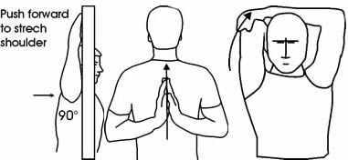

Pre Swim
- Stretch arms and legs
- Do not eat 20 minutes prior
- Do not over hydrate

Stretching Explained
Stretching before and after swimming is important because it may prevent youfrom pulling or tearing a muscle. A muscle injury is not only painful, but it will also prohibit you from swimming again until it heals.
An outline of basic swimming stretches
